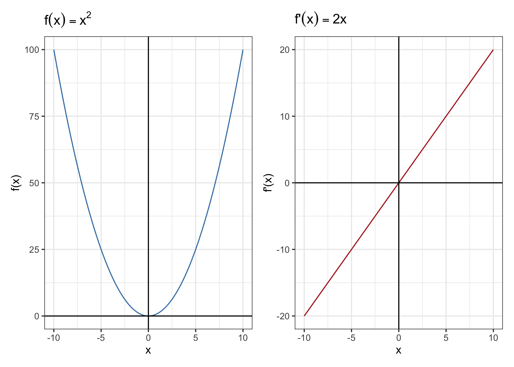
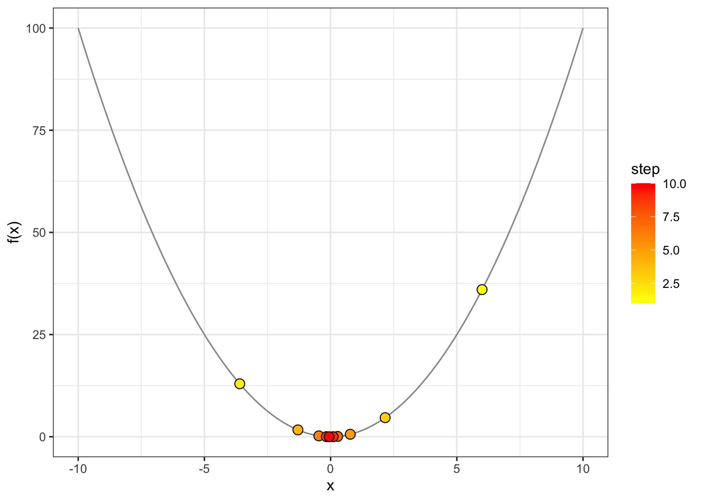
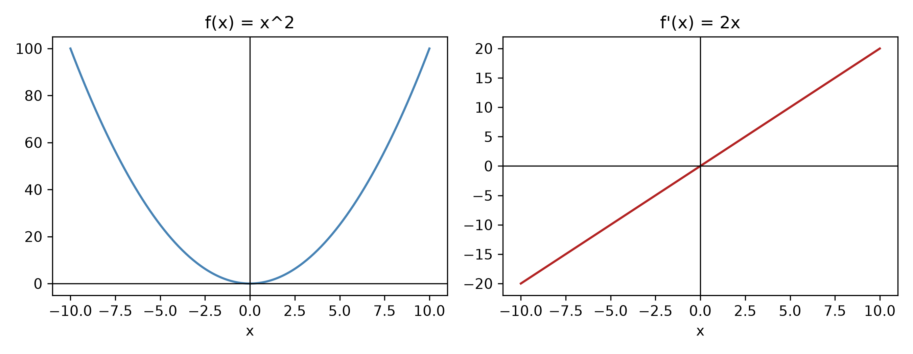
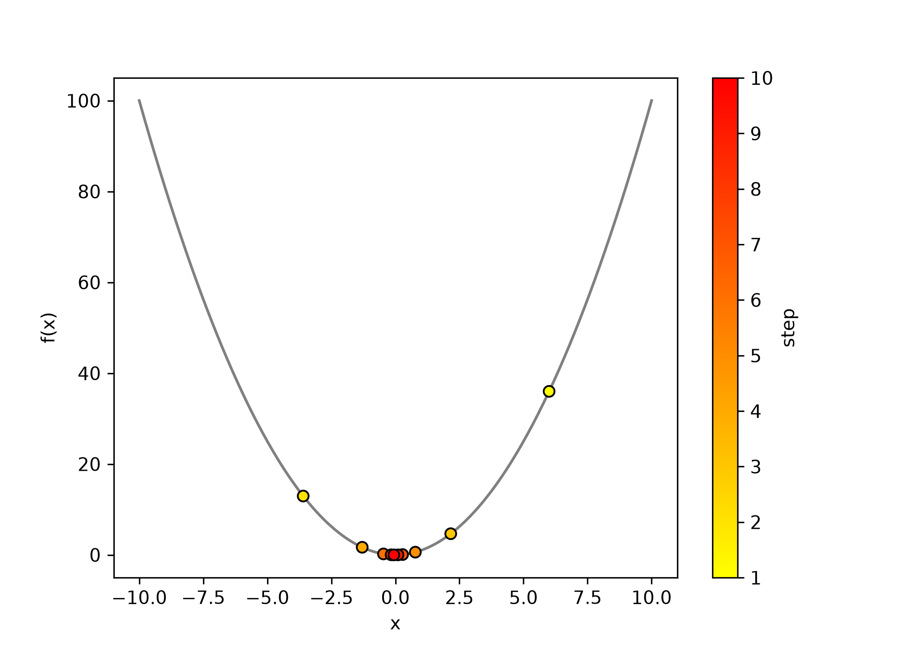

This is the longest exercise of the day and the only one where you will watch an algorithm stop far from the answer without any warning. Run the cells as you read; the printed output is what you should get.
Objectives
Write the gradient descent update rule and say what each symbol in it does.
Tell from the printed path or the loss whether the learning rate is too large, too small, or about right.
Explain why gradient descent on unscaled data can stop far from the answer without any warning, and how standardising fixes it.
Why this, here
Exercise 3.3 found the lowest point of a loss surface by evaluating 15,251 candidate lines. That works for two parameters and nothing larger. Larger models — logistic regression, and anything with a neural network in it — are fitted by the method on this page instead: start somewhere, measure which way is downhill, take a step, repeat.
\(f'(x_n)\) is the derivative of the function at that guess: the slope of the tangent to the curve there. When we fit a model, the function is the MSE and \(x\) is one of the coefficients, so this slope is the derivative of the MSE with respect to the coefficient.
\(\alpha\) is the learning rate: a small positive number controlling step size.
The minus sign carries the whole idea. Where the slope is positive the function rises to the right, so we subtract and move left; where it is negative we subtract a negative and move right. Either way the step is against the slope, and the steeper the slope the bigger the step.
Minimising \(f(x) = x^2\)
The derivative is \(f'(x) = 2x\), so the rule becomes \(x_{n+1} = x_n - 2\alpha
x_n\). We know the answer is \(x = 0\), which is why this is the example: you can see whether the algorithm is working.
# Packages for this exercise. If one is missing, remove the # and run this line once:# install.packages(c("tidyverse", "patchwork"))library(tidyverse)library(patchwork)f <-function(x) x^2f_prime <-function(x) 2* xcurve_df <-data.frame(x =seq(-10, 10, length.out =200)) |>mutate(f_x =f(x), f_prime_x =f_prime(x))p1 <-ggplot(curve_df, aes(x, f_x)) +geom_line(colour ="steelblue") +geom_hline(yintercept =0) +geom_vline(xintercept =0) +labs(title =expression(f(x) == x^2), y ="f(x)")p2 <-ggplot(curve_df, aes(x, f_prime_x)) +geom_line(colour ="firebrick") +geom_hline(yintercept =0) +geom_vline(xintercept =0) +labs(title =expression(paste(f, "'", (x) ==2* x)), y ="f'(x)")p1 + p2

Start at \(x = -10\) with \(\alpha = 0.8\) and take ten steps.
alpha <-0.8x <--10path <-numeric(10)for (i in1:10) { x <- x - alpha *f_prime(x) path[i] <- xcat("step", i, ": x =", signif(x, 4), " f(x) =", signif(f(x), 4), "\n")}
#> step 1 : x = 6 f(x) = 36
#> step 2 : x = -3.6 f(x) = 12.96
#> step 3 : x = 2.16 f(x) = 4.666
#> step 4 : x = -1.296 f(x) = 1.68
#> step 5 : x = 0.7776 f(x) = 0.6047
#> step 6 : x = -0.4666 f(x) = 0.2177
#> step 7 : x = 0.2799 f(x) = 0.07836
#> step 8 : x = -0.168 f(x) = 0.02821
#> step 9 : x = 0.1008 f(x) = 0.01016
#> step 10 : x = -0.06047 f(x) = 0.003656
The guess goes −10, 6, −3.6, 2.16, −1.296 and so on: it crosses the minimum every single step and lands closer each time. Overshooting is not failure. With \(\alpha = 0.8\) each step is 1.6 times the distance to the minimum, so the sign flips and the magnitude shrinks by 0.6.
steps_df <-data.frame(step =1:10, x = path) |>mutate(f_x =f(x))ggplot(curve_df, aes(x, f_x)) +geom_line(colour ="grey60") +geom_point(data = steps_df, aes(x = x, y = f_x, fill = step),shape =21, size =3, colour ="black") +scale_fill_gradient(low ="yellow", high ="red") +labs(x ="x", y ="f(x)", fill ="step")

The learning rate is the whole game
Run the same problem — \(f(x) = x^2\) from \(x = -10\) — at four learning rates for twenty steps each.
descend_1d <-function(alpha, x0 =-10, n =20) { x <- x0for (i inseq_len(n)) x <- x - alpha *f_prime(x) x}rates <-c(0.01, 0.1, 0.8, 1.0, 1.05)data.frame(alpha = rates,final_x =sapply(rates, descend_1d),final_f =sapply(rates, function(a) f(descend_1d(a))))
Read that table carefully, because every row is a different lesson.
\(\alpha\)
After 20 steps
What happened
0.01
\(x = -6.68\)
correct direction, far too slow — it needs thousands of steps
0.1
\(x = -0.115\)
steady approach from one side
0.8
\(x = -0.00037\)
overshoots every step and converges fastest of the five
1.0
\(x = -10\)
bounces between −10 and 10 for ever, making no progress at all
1.05
\(x = -67.3\)
diverges: each step is further out than the last
The fastest rate here is not the smallest one, and the boundary between working and diverging is sharp. For \(f(x)=x^2\) the step multiplies the distance to the minimum by \((1 - 2\alpha)\), so anything below 1 converges, 1 exactly cycles, and above 1 explodes. There is no warning and no error message: at \(\alpha = 1.05\) the loop runs happily and returns a number.
WarningA run that finished is not a run that worked
Nothing in any of those five runs raised an error. If you only look at the final number, the diverging run and the converging run are indistinguishable in form — both are a number. Always print the path, or the loss, and look at whether it is going down.
NoteOne dip or several
Some functions have more than one dip, and gradient descent stops in whichever one it walks into first: start somewhere else and you can get a different answer, with no warning. The MSE of a linear regression is a single bowl, as you saw in Exercise 3.3, so every starting point reaches the same line. Most other models are not so kind, which is why the same neural network trained twice can give two different results.
Gradient descent on the glucose data
Now put the method on the actual problem: find the intercept and slope that minimise the MSE for glucose against age, by gradient descent instead of by lm(). The derivatives of \(\text{MSE}(\beta_0, \beta_1) = \frac{1}{m}\sum (y_i - \beta_0 - \beta_1 x_i)^2\) with respect to the two coefficients are
with \(r_i = y_i - \beta_0 - \beta_1 x_i\) (the extra reading at the end of Day 3 derives them). Two coefficients means two derivatives, and the update rule is applied to both at the same time.
After a thousand iterations the descent reports an intercept of 3.23 and a slope of 3.04, with an MSE of 2513. lm() gives 110.30 and 0.289, with an MSE of 847.5.
Why is it so far off? The descent has not finished. Both coefficients start at 0. The intercept has to travel all the way to about 110, the slope only to about 0.3. But the derivative of the MSE with respect to the slope is multiplied by age (33 years on average), so at the start it is about 34 times larger than the derivative with respect to the intercept. The learning rate has to be small enough that the slope does not overshoot, and at that rate the intercept crawls: it needs about 160,000 iterations to get within 1 of 110. Make the learning rate ten times larger (\(10^{-3}\)) and the slope overshoots further at every step until the numbers blow up.
Nothing warned us. The MSE went down at every iteration and the loop finished without an error. Compare with a known answer when you have one, and always look at the loss.
The fix is to standardise both columns (subtract the mean, divide by the standard deviation) so that both coefficients are on the same scale, descend there, and convert the answer back.
Task 1 — Make it converge
Standardise, descend with a learning rate a thousand times larger, and rescale the parameters to the original units (the box under the code explains how).
# Replace every ______ below, then run this cell.zx <- (glu$age -mean(glu$age)) /sd(glu$age)zy <- (glu$glucose - ______) /sd(glu$glucose)std <-descend_mse(zx, zy, alpha =0.1, n =50)slope <- std$b1 *sd(glu$glucose) /sd(glu$age)intercept <-mean(glu$glucose) - slope *mean(glu$age)c(intercept = intercept, slope = slope)coef(lm(glucose ~ age, data = glu)) # the answer to compare with
TipHow the conversion back works
On the standardised scale both columns are measured in standard deviations (SDs). The descent finds a slope of 0.135: one SD more age goes with 0.135 SD more glucose. Its intercept is 0, because both columns are centred on their means.
Slope. One SD of age is 13.8 years and one SD of glucose is 29.6 mg/dL. So 13.8 more years go with 0.135 × 29.6 = 4.0 mg/dL more glucose, which is 4.0 / 13.8 = 0.289 mg/dL per year. That is the line slope <- std$b1 * sd(glu$glucose) / sd(glu$age).
Intercept. The fitted line always passes through the average patient: 33.3 years and 119.9 mg/dL. To find the intercept (the line at age 0), start at the average glucose and go back 33.3 years along the slope: 119.9 − 0.289 × 33.3 = 110.3. That is the line intercept <- mean(glu$glucose) - slope * mean(glu$age).
TipStuck?
Standardising a column means centring it on its own mean and dividing by its own standard deviation. The line above does it for age; do the same thing to glucose.
coef(lm(glucose ~ age, data = glu)) # the answer to compare with
#> (Intercept) age
#> 110.2979509 0.2886749
Fifty iterations on the standardised data give 110.298 and 0.28867, agreeing with lm() to five significant figures. The same algorithm, the same data, the same loss; twenty times fewer iterations and a thousand times larger step. Scaling was not a tidying-up step, it was the difference between an answer and no answer.
That curve is the plot to draw every time you run an optimiser. A descent that is working looks like this: a steep fall, then a flat tail. Anything else — a rise, a wobble, a straight line still sloping down at the last iteration — is telling you to change the learning rate or the number of steps.
\(f'(x_n)\) is the derivative of the function at that guess: the slope of the tangent to the curve there. When we fit a model, the function is the MSE and \(x\) is one of the coefficients, so this slope is the derivative of the MSE with respect to the coefficient.
\(\alpha\) is the learning rate: a small positive number controlling step size.
The minus sign carries the whole idea. Where the slope is positive the function rises to the right, so we subtract and move left; where it is negative we subtract a negative and move right. Either way the step is against the slope, and the steeper the slope the bigger the step.
Minimising \(f(x) = x^2\)
The derivative is \(f'(x) = 2x\), so the rule becomes \(x_{n+1} = x_n - 2\alpha
x_n\). We know the answer is \(x = 0\), which is why this is the example: you can see whether the algorithm is working.
# Packages for this exercise. If one is missing, install it once from a terminal# (in a Jupyter notebook, type %pip instead of pip):# pip install pandas numpy matplotlib scikit-learnimport numpy as npimport matplotlib.pyplot as pltf =lambda x: x**2f_prime =lambda x: 2* xxs = np.linspace(-10, 10, 200)fig, axes = plt.subplots(1, 2, figsize=(9, 3.5))axes[0].plot(xs, f(xs), color="steelblue"); axes[0].set_title("f(x) = x^2")axes[1].plot(xs, f_prime(xs), color="firebrick"); axes[1].set_title("f'(x) = 2x")for ax in axes: ax.axhline(0, color="black", lw=0.8); ax.axvline(0, color="black", lw=0.8) ax.set_xlabel("x")plt.tight_layout(); plt.show()

Start at \(x = -10\) with \(\alpha = 0.8\) and take ten steps.
alpha =0.8x =-10.0path = []for i inrange(1, 11): x = x - alpha * f_prime(x) path.append(x)print(f"step {i}: x = {x:.4g} f(x) = {f(x):.4g}")
#> step 1: x = 6 f(x) = 36
#> step 2: x = -3.6 f(x) = 12.96
#> step 3: x = 2.16 f(x) = 4.666
#> step 4: x = -1.296 f(x) = 1.68
#> step 5: x = 0.7776 f(x) = 0.6047
#> step 6: x = -0.4666 f(x) = 0.2177
#> step 7: x = 0.2799 f(x) = 0.07836
#> step 8: x = -0.168 f(x) = 0.02821
#> step 9: x = 0.1008 f(x) = 0.01016
#> step 10: x = -0.06047 f(x) = 0.003656
The guess goes −10, 6, −3.6, 2.16, −1.296 and so on: it crosses the minimum every single step and lands closer each time. Overshooting is not failure. With \(\alpha = 0.8\) each step is 1.6 times the distance to the minimum, so the sign flips and the magnitude shrinks by 0.6.
fig, ax = plt.subplots()ax.plot(xs, f(xs), color="grey")sc = ax.scatter(path, [f(v) for v in path], c=range(1, len(path) +1), cmap="autumn_r", edgecolor="black", zorder=3)cbar = fig.colorbar(sc, ax=ax, label="step")ax.set_xlabel("x"); ax.set_ylabel("f(x)")plt.show()

The learning rate is the whole game
Run the same problem — \(f(x) = x^2\) from \(x = -10\) — at four learning rates for twenty steps each.
import pandas as pddef descend_1d(alpha, x0=-10.0, n=20): x = x0for _ inrange(n): x = x - alpha * f_prime(x)return xrates = [0.01, 0.1, 0.8, 1.0, 1.05]pd.DataFrame({"alpha": rates,"final_x": [descend_1d(a) for a in rates],"final_f": [f(descend_1d(a)) for a in rates]})
Read that table carefully, because every row is a different lesson.
\(\alpha\)
After 20 steps
What happened
0.01
\(x = -6.68\)
correct direction, far too slow — it needs thousands of steps
0.1
\(x = -0.115\)
steady approach from one side
0.8
\(x = -0.00037\)
overshoots every step and converges fastest of the five
1.0
\(x = -10\)
bounces between −10 and 10 for ever, making no progress at all
1.05
\(x = -67.3\)
diverges: each step is further out than the last
The fastest rate here is not the smallest one, and the boundary between working and diverging is sharp. For \(f(x)=x^2\) the step multiplies the distance to the minimum by \((1 - 2\alpha)\), so anything below 1 converges, 1 exactly cycles, and above 1 explodes. There is no warning and no error message: at \(\alpha = 1.05\) the loop runs happily and returns a number.
WarningA run that finished is not a run that worked
Nothing in any of those five runs raised an error. If you only look at the final number, the diverging run and the converging run are indistinguishable in form — both are a number. Always print the path, or the loss, and look at whether it is going down.
NoteOne dip or several
Some functions have more than one dip, and gradient descent stops in whichever one it walks into first: start somewhere else and you can get a different answer, with no warning. The MSE of a linear regression is a single bowl, as you saw in Exercise 3.3, so every starting point reaches the same line. Most other models are not so kind, which is why the same neural network trained twice can give two different results.
Gradient descent on the glucose data
Now put the method on the actual problem: find the intercept and slope that minimise the MSE for glucose against age, by gradient descent instead of by LinearRegression. The derivatives of \(\text{MSE}(\beta_0, \beta_1) = \frac{1}{m}\sum (y_i - \beta_0 - \beta_1 x_i)^2\) with respect to the two coefficients are
with \(r_i = y_i - \beta_0 - \beta_1 x_i\) (the extra reading at the end of Day 3 derives them). Two coefficients means two derivatives, and the update rule is applied to both at the same time.
After a thousand iterations the descent reports an intercept of 3.23 and a slope of 3.04, with an MSE of 2513. LinearRegression gives 110.30 and 0.289, with an MSE of 847.5.
Why is it so far off? The descent has not finished. Both coefficients start at 0. The intercept has to travel all the way to about 110, the slope only to about 0.3. But the derivative of the MSE with respect to the slope is multiplied by age (33 years on average), so at the start it is about 34 times larger than the derivative with respect to the intercept. The learning rate has to be small enough that the slope does not overshoot, and at that rate the intercept crawls: it needs about 160,000 iterations to get within 1 of 110. Make the learning rate ten times larger (\(10^{-3}\)) and the slope overshoots further at every step until the numbers blow up.
Nothing warned us. The MSE went down at every iteration and the loop finished without an error. Compare with a known answer when you have one, and always look at the loss.
The fix is to standardise both columns (subtract the mean, divide by the standard deviation) so that both coefficients are on the same scale, descend there, and convert the answer back.
Task 1 — Make it converge
Standardise, descend with a learning rate a thousand times larger, and rescale the parameters to the original units (the box under the code explains how).
# Replace every ______ below, then run this cell.from sklearn.linear_model import LinearRegressionmx, sx = glu["age"].mean(), glu["age"].std()my, sy = glu["glucose"].mean(), glu["glucose"].std()zx = (glu["age"] - mx) / sxzy = (glu["glucose"] - ______) / systd = descend_mse(zx, zy, alpha=0.1, n=50)slope = std["b1"] * sy / sxintercept = my - slope * mxref = LinearRegression().fit(glu[["age"]], glu["glucose"])print(intercept, slope)print(round(ref.intercept_, 3), round(ref.coef_[0], 4)) # the answer to compare with
TipHow the conversion back works
On the standardised scale both columns are measured in standard deviations (SDs). The descent finds a slope of 0.135: one SD more age goes with 0.135 SD more glucose. Its intercept is 0, because both columns are centred on their means.
Slope. One SD of age is 13.8 years and one SD of glucose is 29.6 mg/dL. So 13.8 more years go with 0.135 × 29.6 = 4.0 mg/dL more glucose, which is 4.0 / 13.8 = 0.289 mg/dL per year. That is the line slope = std["b1"] * sy / sx.
Intercept. The fitted line always passes through the average patient: 33.3 years and 119.9 mg/dL. To find the intercept (the line at age 0), start at the average glucose and go back 33.3 years along the slope: 119.9 − 0.289 × 33.3 = 110.3. That is the line intercept = my - slope * mx.
print(round(ref.intercept_, 3), round(ref.coef_[0], 4)) # the answer to compare with
#> 110.298 0.2887
Fifty iterations on the standardised data give 110.298 and 0.28867, agreeing with LinearRegression to five significant figures. The same algorithm, the same data, the same loss; twenty times fewer iterations and a thousand times larger step. Scaling was not a tidying-up step, it was the difference between an answer and no answer.
That curve is the plot to draw every time you run an optimiser. A descent that is working looks like this: a steep fall, then a flat tail. Anything else — a rise, a wobble, a straight line still sloping down at the last iteration — is telling you to change the learning rate or the number of steps.
Reflection
You are handed a fitted model and a plot of its loss against iteration. The curve is still falling at the final iteration. What do you do, and what would you have to check before trusting the model as it stands?
Standardising changed the parameters you had to find but not the model. Why can the two intercepts — one on standardised columns, one on the original — differ while the predictions stay identical?
ImportantLearning points
Gradient descent repeats one step: move each coefficient against the derivative of the MSE with respect to that coefficient, scaled by the learning rate.
The learning rate decides everything: too small is slow, too large overshoots and blows up, and neither raises an error.
On unscaled columns the descent can stop far from the answer; standardise first, and always look at the loss curve.
For linear regression the MSE is a single bowl, so the descent reaches the same line as lm() and LinearRegression.